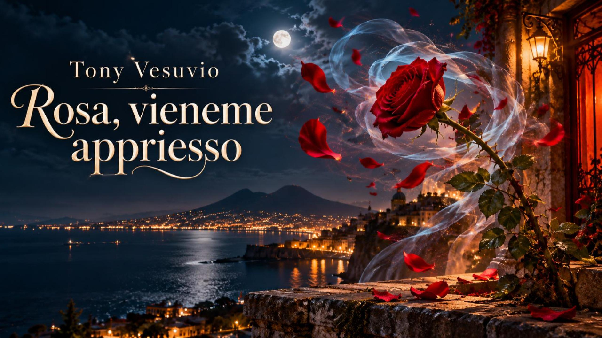
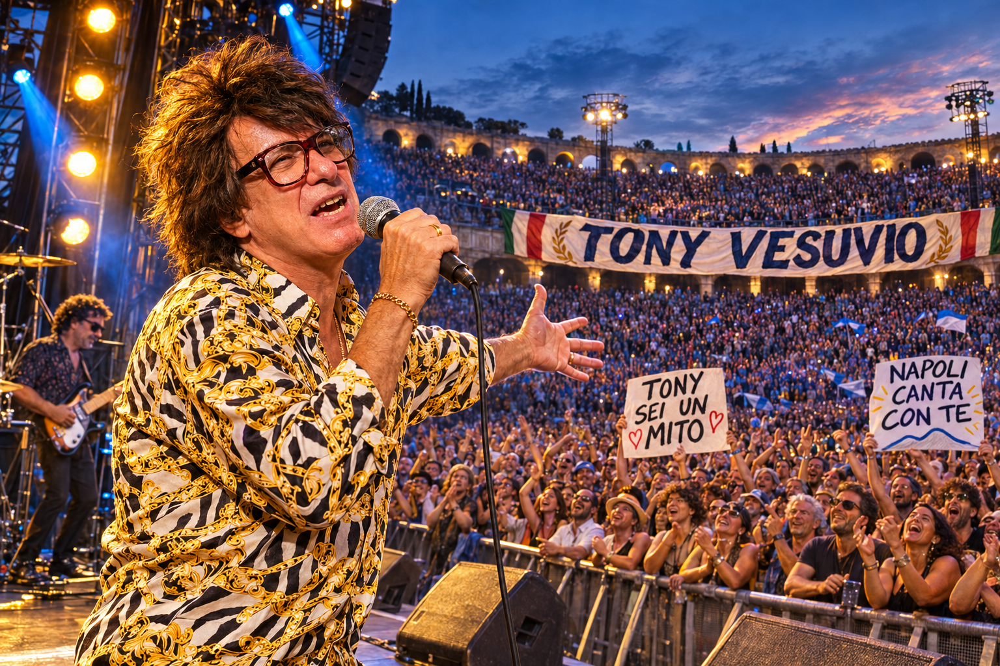
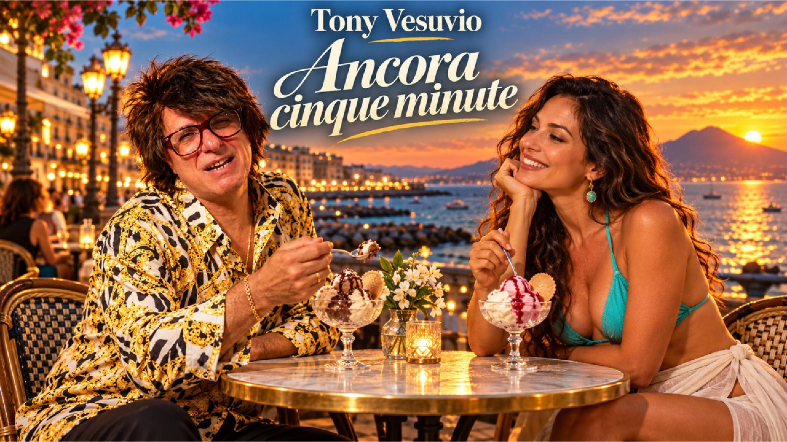
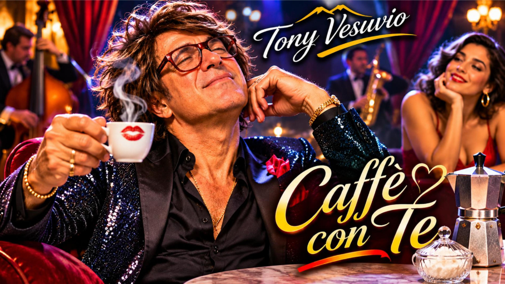
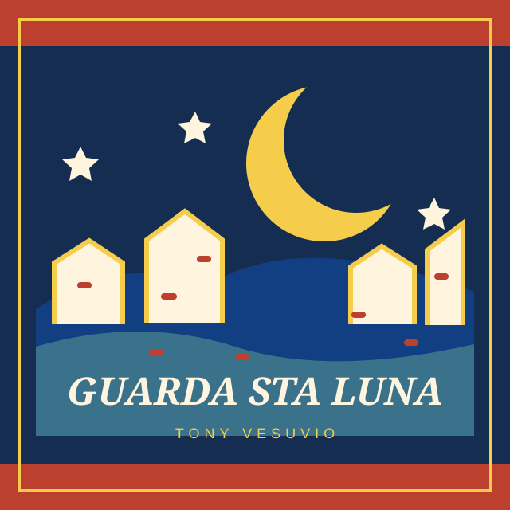
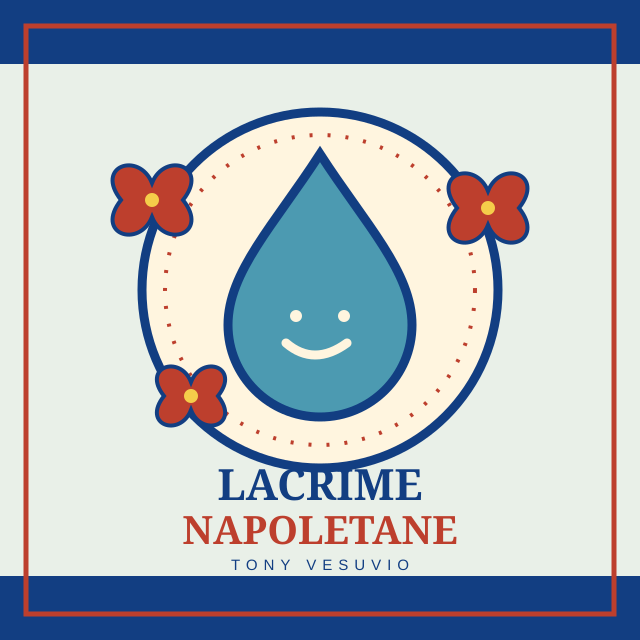
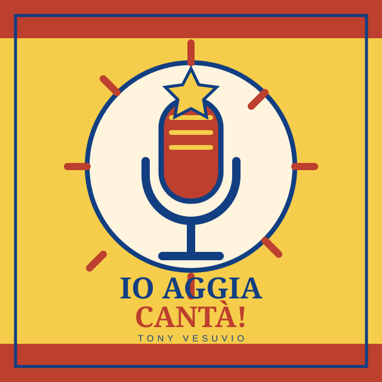
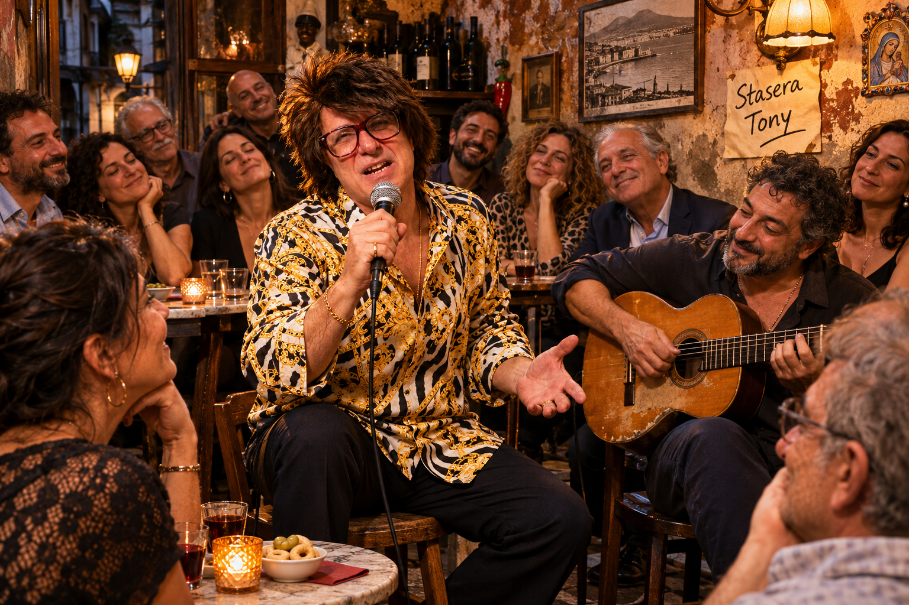
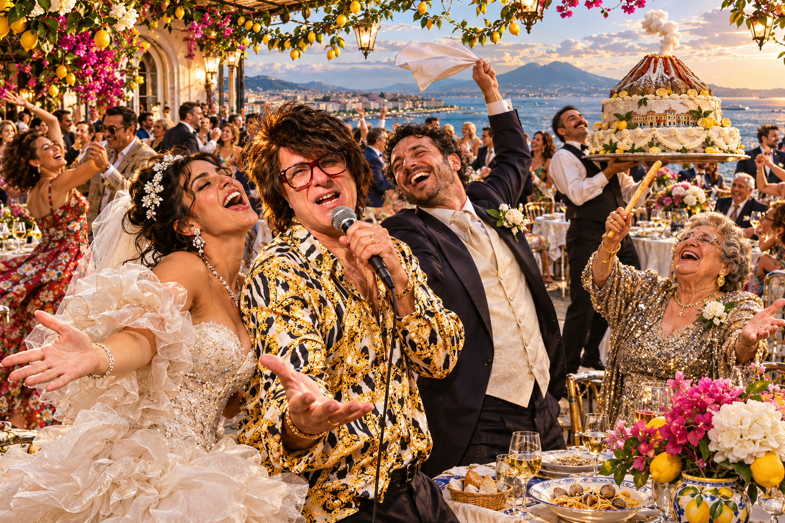
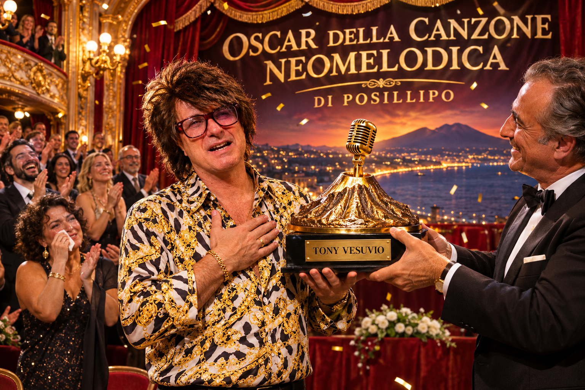

01 / TONY VESUVIORosa, vieneme appriesso
Video ufficiale su YouTube.
Una canzone da dedicare. Un ritornello da cantare insieme. Un pensiero da lasciare a Tony.
Qui c'è un posto anche per te.
Scopri le canzoni Hai qualcosa da dirgli? Dillo a Tony.Le luci si accendono, gli striscioni si alzano. Il resto lo canta il pubblico.

Scegli il tuo ritornello. C'è quello che ti somiglia e quello da dedicare a qualcuno.

01 / TONY VESUVIOVideo ufficiale su YouTube.
Video ufficiale su YouTube.

03 / TONY VESUVIOVideo ufficiale su YouTube.

04 / TONY VESUVIOVideo ufficiale su YouTube.
Video ufficiale su YouTube.

06 / TONY VESUVIOVideo ufficiale su YouTube.

07 / TONY VESUVIOVideo ufficiale su YouTube.

08 / TONY VESUVIOVideo ufficiale su YouTube.
Ti sono rimasti in testa? Iscriviti al canale YouTube di Tony Vesuvio e canta con noi.
▶ Iscriviti al canale YouTube di Tony VesuvioVisita il canale ufficiale e premi Iscriviti.
Non servono grandi occasioni. A volte bastano una chitarra, pochi amici e una canzone che nessuno vuole far finire.
Il fan club nasce così: dalla voglia di esserci, ascoltare e cantare insieme.
Lascia un pensiero a Tony ↗Il contatto per aderire al club sarà disponibile all'apertura.
Tu fai la domanda.
Tony ci mette il Vesuvio.

Dillo a TonyIl microfono è tuo.
Tony: Uè! Accomodati, che qua pure il buongiorno entra con l’orchestra.
La festa si allarga. La zia prende il comando. E da Posillipo arriva una certa telefonata.

La sposa canta, la zia dirige. Tony aveva promesso solo una canzone.

L'Oscar della canzone neomelodica di Posillipo. Tony ringrazia tutti. Anche quelli che erano venuti solo per il buffet.
Scene di fantasia create con AI per raccontare il mondo surreale di Tony Vesuvio.
Fai colazione con Tony Vesuvio. Una tazza, una canzone, un pensiero per qualcuno: inquadra il QR code e lascia partire la musica.
Il caffè lo metti tu.
Alla serenata pensa Tony.